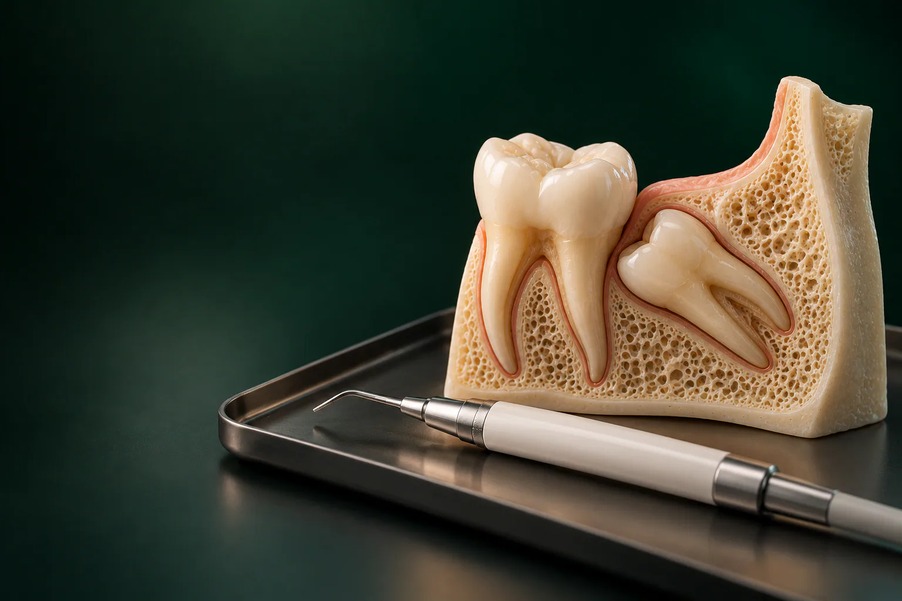

Раджабов Азамат Назирович
Хирург, имплантолог
Удаление зубов и имплантация, хирургия в сложных случаях
Записаться к врачу
Удаление зуба мудрости нужно, когда восьмёрка растёт под углом, упирается в соседний зуб, не может прорезаться или над ней снова и снова воспаляется десна.
Имеются противопоказания. Необходима консультация специалиста.
В стоматологии «Умная Медицина» в пос. Удельная (Раменский округ) удалить восьмёрку можно от 4 400 ₽, а ретинированные и дистопированные зубы хирурги удаляют с пьезоскальпелем. Операции проводят стоматологи-хирурги, имплантологи Раджабов Азамат Назирович и Хлудневский Михаил Сергеевич. Начните с консультации хирурга: врач посмотрит снимок и скажет, нужно ли удалять зуб или его можно оставить.
Цена зависит от того, как стоит восьмёрка: прорезавшийся зуб извлечь проще, чем лежащий в кости под углом. Поэтому хирург сначала смотрит снимок, а затем называет точную сумму: до начала операции.
Цены «от»: минимальные. Окончательная стоимость зависит от вашего случая и фиксируется до начала лечения. Цены актуальны на 18.10.2026. Все виды удаления зубов и их стоимость: на странице хирургия и удаление зубов.
Что входит в стоимость удаления и итоговую сумму, хирург скажет на консультации до начала операции.
Подробнее: на странице цены, рассрочка и налоговый вычет.
Зуб мудрости не обязательно удалять «на всякий случай». Если он прорезался ровно, стоит в ряду, участвует в жевании и вы можете нормально его почистить, хирург, скорее всего, предложит его сохранить и просто наблюдать на плановых осмотрах. Решение принимают по снимку и осмотру, а не по возрасту или привычке.
Если восьмёрка побеспокоила один раз, когда прорезалась, а теперь стоит правильно и хорошо очищается, её можно оставить. Окончательно это решает хирург по снимку.
Когда восьмёрка прорезывается не полностью, над её коронкой остаётся «капюшон» из десны. Под ним скапливаются остатки еды и бактерии, и десна воспаляется: краснеет, отекает, болит при глотании и жевании, становится трудно открыть рот, появляется неприятный запах.
Сначала снимают острое воспаление, затем решают, что делать с зубом. Если зуб стоит неправильно и воспаление повторяется, его стоит удалить. При нарастающем отёке, температуре и трудностях с глотанием приходите к врачу без промедления.
Верхний зуб мудрости чаще прорезается полностью, кость вокруг него мягче, поэтому его обычно извлекают проще и быстрее. Главная особенность, близость к верхнечелюстной пазухе: корни могут подходить к её дну вплотную. Чтобы это оценить, перед операцией нужен снимок, а в спорных случаях: КТ.
Нижний зуб мудрости чаще растёт под углом, упирается в седьмой зуб или вовсе не прорезывается. Кость нижней челюсти плотнее, а рядом с корнями проходит канал нижнечелюстного нерва. Поэтому удалять нижнюю восьмёрку обычно сложнее: иногда нужны разрез десны, разделение зуба на части и швы. Отёк и ощущения после такой операции, как правило, выражены сильнее.
Ретинированный зуб, тот, что так и не прорезался: он полностью или частично остаётся в кости или под десной. Дистопированный: прорезался, но не на своём месте или под неправильным углом, например наклонён к щеке или к соседнему зубу.
Это сложные операции: зуб освобождают из кости, иногда извлекают по частям и ушивают рану. Удаление дистопированного зуба стоит от 8 500 ₽, ретинированного: от 10 890 ₽. Вокруг коронки непрорезавшегося зуба может сформироваться фолликулярная киста: тогда хирург удаляет её вместе с зубом, от 9 900 ₽. Если киста обнаружена у корня другого зуба, подробнее: на странице лечение кисты зуба.
Для ретинированных и дистопированных зубов в клинике используют пьезоскальпель, ультразвуковой хирургический инструмент. Он работает за счёт микровибраций и рассекает в первую очередь костную ткань, а к мягким тканям, сосудам и нервам относится бережнее, чем бор. Поэтому хирург может аккуратно освободить восьмёрку там, где рядом проходит нерв или тонкая стенка кости.
Панорамный снимок плоский: по нему не всегда видно, насколько близко корни подходят к нерву или пазухе. КТ даёт объёмное изображение кости, корней, нервного канала и пазух, и хирург заранее планирует, как подойти к зубу и нужно ли его разделять.
Снимки цифровые, с невысокой дозой облучения; результат готов сразу, файлы можно получить по электронной почте.
Операцию проводят под местной анестезией. Сначала десну обрабатывают гелем или спреем с анестетиком: аппликационное обезболивание делает сам укол почти незаметным. Затем выполняют инфильтрационную анестезию. В клинике применяют современные препараты: Скандонест, Ультракаин, Убистезин, артикаин. Препарат и дозу врач подбирает по вашему здоровью, аллергии и сложности вмешательства.
Во время операции вы почувствуете давление и движения инструментов, но не острую боль. Если станет неприятно, скажите хирургу: он добавит анестетик. Удаление под наркозом или седацией клиника не проводит: даже сложные восьмёрки удаляют под местным обезболиванием.
Сколько идёт операция, зависит от сложности: прорезавшийся верхний зуб обычно удаляют быстро, ретинированный нижний требует больше времени.
Это зависит от положения зубов и вашего здоровья. Часто удаляют зубы с одной стороны, чтобы жевать другой, а вторую сторону оперируют после заживления. Если удалять нужно все четыре восьмёрки, хирург составит план по КТ двух челюстей и заранее скажет, сколько визитов понадобится и сколько будет стоить лечение.
Главная задача первых дней, сохранить в лунке кровяной сгусток: он закрывает рану и становится основой для новой ткани. Ниже: общие правила, точные рекомендации даст хирург.
После операции какое-то время болит десна, может отечь щека и тяжело открываться рот, особенно после сложного удаления нижней восьмёрки. Слюна в первые часы бывает розоватой. Через несколько дней в лунке появляется белесый налёт: чаще всего это нормальная фибриновая плёнка, а не гной. Сроки заживления индивидуальны: десна затягивается быстрее, кость восстанавливается дольше. Ход заживления хирург проверит на контрольном осмотре.
Позвоните администратору и приходите на приём, если:
Альвеолит в клинике лечат: хирург очищает лунку (кюретаж) и закладывает лечебную повязку.
Восьмёрки в клинике удаляют два стоматолога-хирурга. Оба также занимаются имплантацией, так что при необходимости лечение продолжит врач, который уже знает вашу ситуацию. К нам приезжают не только из Удельной и соседних посёлков, но и из Раменского, Люберец и Балашихи.
Все специалисты: на странице врачи клиники.
Хирург, имплантолог
Удаление зубов и имплантация, хирургия в сложных случаях
Записаться к врачу
Хирург, имплантолог
Имплантация, удаление зубов и подготовка к имплантации
Записаться к врачуОтзывы о клинике и врачах: на ПроДокторов, Яндекс Картах и 2ГИС.
Не всегда. Если восьмёрка стоит ровно, хорошо чистится и не давит на соседний зуб, её можно оставить и наблюдать. Удалять стоит, если снимок показывает неправильный наклон, кисту, кариес на соседнем зубе или если десна над зубом регулярно воспаляется.
Обычно боль сильнее всего в первые сутки-двое, затем уходит; после сложной операции: дольше. Если через несколько дней боль не уменьшается, а усиливается, приходите на осмотр: это может быть альвеолит.
Отёк обычно нарастает в первые дни, а затем спадает. Его выраженность зависит от сложности удаления. Уменьшить его помогает холод в первые часы. Если отёк растёт дальше или появилась температура, свяжитесь с клиникой.
После удаления нижней восьмёрки рядом с раной напрягаются жевательные мышцы, поэтому ограничение открывания рта в первые дни: частая реакция. Обычно оно проходит по мере заживления. Если легче не становится, покажитесь хирургу.
Зависит от того, какие швы наложены: часть рассасывается сама, другие снимают на контрольном приёме. Хирург скажет об этом сразу после операции; если швы нужно снимать, обычно это делают примерно через 10 дней.
Розоватая слюна в первые часы: норма. Если кровь заметная, сложите стерильный бинт, плотно прикусите его над лункой и не полощите рот. Если кровотечение не останавливается, звоните в клинику.
Курение и алкоголь мешают формированию сгустка и повышают риск альвеолита, поэтому на время заживления от них стоит отказаться. Воду пить можно, но не через трубочку и не горячие напитки.
Запишитесь на консультацию: план лечения с ценой по этапам
Имеются противопоказания. Необходима консультация специалиста.
Адрес клиники: Московская обл., Раменский округ, пос. Удельная, ул. Громова, 10/2. Клиника рядом с Жуковским; по соседству Малаховка, Быково, Ильинский, Родники, Островцы, Красково и Октябрьский. Пациенты приезжают и из Люберец, Раменского и Балашихи. Если у вас уже есть снимок восьмёрки, возьмите его на консультацию к хирургу.
На машине: из Жуковского через Быково, без выезда в Москву. У клиники есть бесплатная парковка.
На МЦД-3: до станции Удельная, от неё пешком до клиники. Из Жуковского: от станции Отдых три остановки без пересадок (Ильинская, Быково, Удельная).
Подробнее о клинике: на странице стоматология в Удельной.
Имеются противопоказания. Необходима консультация специалиста.
пгт Удельная, Раменский округ, рядом с Жуковским.
Ежедневно с 9:00 до 21:00
+7 495 150-36-15К нам ездят из Жуковского, Раменского, Быково, Ильинского, Красково, Малаховки, Островцов, Люберец и Балашихи.
Перезвоним за 5 минут, подберём врача и удобное время.
Оставьте номер, администратор перезвонит и ответит на вопросы.
Подойдёт КТ, панорама, прицельный снимок или фото плана лечения из другой клиники. Врач посмотрит и ответит в течение рабочего дня. Это бесплатно.
Хирург, ортопед и терапевт осмотрят вас вместе, сделаем КТ. Консультация бесплатная, если остаётесь на лечение. Стоимость лечения врач назовёт после осмотра.
Консультацию ведут вместе
ХирургМихаил ОртопедЕвгений
ОртопедЕвгений ТерапевтАртём
ТерапевтАртёмПервый визит 0 ₽, если остаётесь на лечение
Хирург, ортопед и терапевт посмотрят ваш случай вместе и предложат два-три варианта с ценой. Оставьте номер, администратор перезвонит и подберёт время.
Скидка 10% на лечение, если оплатить его в день консультации
Перезвоним за 5 минут, ежедневно с 9:00 до 21:00. Нажимая кнопку, вы соглашаетесь с обработкой персональных данных и Политикой конфиденциальности.
Администратор перезвонит за 5 минут с номера +7 495 150-36-15.
Это демонстрация: на рабочем сайте заявка уйдёт в amoCRM с названием формы, поводом, страницей и UTM-метками.